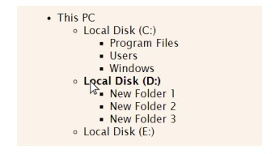

Создать html-страницу с деревом вложенных директорий.
При клике на элемент списка, он должен сворачиваться или разворачиваться. При наведении на элемент, шрифт должен становиться жирным (с помощью CSS).

- This PC
- Local Disk (C:)
- Program Files
- Users
- Windows
- Local Disk (D:)
- New folder 1
- New folder 2
- New folder 3
- Local Disk (E:)
- Local Disk (C:)